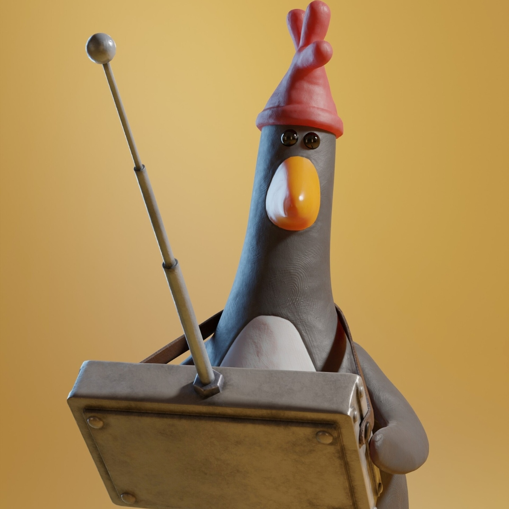

About Me

Hello! I’m Mark Kennedy, a Game Design student passionate about creating fun and joy.
I’m currently studying at The Ohio State University.
My work explores the intersection of game design and minimalism.
✏️ 2025 Game Design Time: ...
I enjoy combining thoughtful design and simple forms to explore how games create meaningful experiences.
This site highlights my background, projects, and a few personal details.
Education
Game Design Major — The Ohio State University, 2026
Game Studies Minor — The Ohio State University, 2026
Design Thinking Minor — The Ohio State University, 2026
Research
My research explores questions like:
- How can minimalism improve game design and production?
- What creates fun, and can we intentionally design it?
- Why do games create such vivid emotional memories?
Projects
The Ohio State University, Autumn 2025
In this course, I explored the principles of analog game design — learning how play, risk-taking, and reward systems motivate players.
Through a hands-on approach, I created and tested board games, collaborating with classmates to refine mechanics, goals, and aesthetics.
This experience strengthened my ability to prototype, iterate, and communicate ideas clearly in both visual and written forms.
The Ohio State University, Autumn 2025
For this project, I developed a clear vision, timeline, and creative approach to produce an original work analyzing video games.
I outlined the exact tools and techniques I needed, scheduled each phase, and worked toward a polished creative or multimodal project
ready for presentation at the end of the semester.
Fun Facts
- ⚔️ I love medieval history.
- 📚 I’m always reading something new.
- 🎵 I enjoy every genre of music.